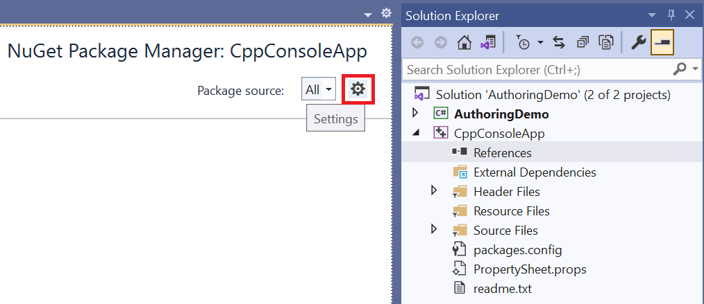
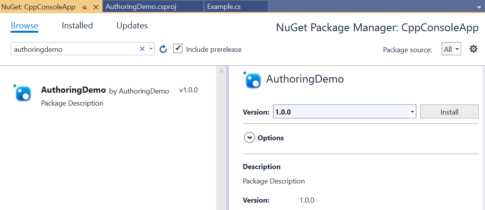
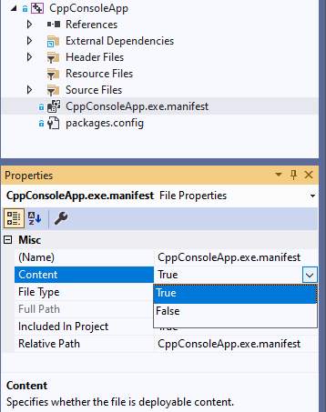
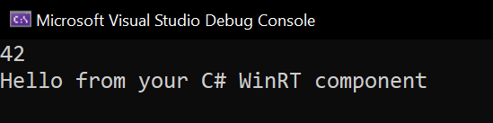

Walkthrough—Create a C#/WinRT component, and consume it from C++/WinRT
C#/WinRT enables developers using .NET to author their own Windows Runtime components in C# using a class library project. Authored components can be consumed in native desktop applications as a package reference or as a project reference with a few modifications.
This walkthrough demonstrates how to create a simple Windows Runtime component using C#/WinRT, distribute the component as a NuGet package, and consume the component from a C++/WinRT console application. For the full sample that provides the code for this article, see the C#/WinRT authoring sample. For more details about authoring, see Authoring components.
For a walkthrough on authoring WinUI controls with C#/WinRT specifically for use in Windows App SDK applications, refer to the article Walkthrough: Author a C# component with WinUI 3 controls and consume from a C++ Windows App SDK application
Prerequisites
This walkthrough requires the following tools and components:
- Visual Studio 2022
- .NET 6.0 SDK or later
- C++/WinRT VSIX for C++/WinRT project templates
Create a simple Windows Runtime Component using C#/WinRT
Begin by creating a new project in Visual Studio. Select the Class Library project template, and name the project AuthoringDemo. You'll need to make the following additions and modifications to the project:
Update the
TargetFrameworkin the AuthoringDemo.csproj file and add the following elements to thePropertyGroup:<PropertyGroup> <TargetFramework>net8.0-windows10.0.19041.0</TargetFramework> <Platforms>x64</Platforms> </PropertyGroup>To access Windows Runtime types, you need to set a specific Windows SDK version in the TFM. For more details on the supported version, see .NET 6 and later: Use the TFM option.
Install the Microsoft.Windows.CsWinRT NuGet package in your project.
a. In Solution Explorer, right click on the project node and select Manage NuGet Packages.
b. Search for the Microsoft.Windows.CsWinRT NuGet package and install the latest version. This walkthrough uses C#/WinRT version 1.4.1.
Add a new
PropertyGroupelement that sets theCsWinRTComponentproperty. This specifies that your project is a Windows Runtime component so that a.winmdfile is generated when you build the project.<PropertyGroup> <CsWinRTComponent>true</CsWinRTComponent> </PropertyGroup>For a full list of C#/WinRT project properties, refer to the C#/WinRT NuGet documentation.
You can author your runtime classes using library
.csclass files. Right click on theClass1.csfile, and rename it toExample.cs. Add the following code to this file, which adds a public property and method to the runtime class. Remember to mark any classes you want to expose in the runtime component aspublic.namespace AuthoringDemo { public sealed class Example { public int SampleProperty { get; set; } public static string SayHello() { return "Hello from your C# WinRT component"; } } }You can now build the project to generate the
.winmdfile for your component. Right-click on the project in Solution Explorer, and click Build. You'll see the generatedAuthoringDemo.winmdfile in your build output folder.
Generate a NuGet package for the component
Most developers will want to distribute and share their Windows Runtime component as a NuGet package. Another option is to consume the component as a project reference. The following steps demonstrate how to package the AuthoringDemo component. When you generate the package, C#/WinRT configures the component and hosting assemblies in the package to enable consumption from native applications.
There are several ways to generate the NuGet package:
If you want to generate a NuGet package every time you build the project, add the following property to the AuthoringDemo project file and then rebuild the project.
<PropertyGroup> <GeneratePackageOnBuild>true</GeneratePackageOnBuild> </PropertyGroup>Alternatively, you can generate a NuGet package by right clicking the AuthoringDemo project in Solution Explorer and selecting Pack.
When you build the package, the Build window should indicate that the NuGet package AuthoringDemo.1.0.0.nupkg was successfully created. See Create a package using the dotnet CLI for more details on NuGet package properties with the .NET CLI.
Consume the component from a C++/WinRT app
C#/WinRT authored Windows Runtime components can be consumed from any Windows Runtime (WinRT)-compatible language. The following steps demonstrate how to call the authored component above in a C++/WinRT console application.
Note
Consuming a C#/WinRT component from C#/.NET apps is supported by both package reference or project reference. This scenario is equivalent to consuming any ordinary C# class library and does not involve WinRT activation in most cases. Starting with C#/WinRT 1.3.5, project references for C# consumers require .NET 6.
Add a new C++/WinRT Console Application project to your solution. Note that this project can also be part of a different solution if you choose so.
a. In Solution Explorer, right click your solution node and click Add -> New Project.
b. In the Add New Project dialog box, search for the C++/WinRT Console Application project template. Select the template and click Next.
c. Name the new project CppConsoleApp and click Create.
Add a reference to the AuthoringDemo component, either as a NuGet package or a project reference.
Option 1 (Package reference):
a. Right click the CppConsoleApp project and select Manage NuGet packages. You may need to configure your package sources to add a reference to the AuthoringDemo NuGet package. To do this, click the Settings icon in NuGet Package Manager and add a package source to the appropriate path.

b. After configuring your package sources, search for the AuthoringDemo package and click Install.

Option 2 (Project reference):
a. Right click the CppConsoleApp project and select Add -> Reference. Under the Projects node, add a reference to the AuthoringDemo project.
To host the component, you will need to add a manifest file for activatable class registrations. For more details about managed component hosting, see Managed component hosting.
a. To add the manifest file, again right click on the project and choose Add -> New Item. Search for the Text File template and name it CppConsoleApp.exe.manifest. Paste the following contents, which specify the runtime classes using activatable class registration entries:
<?xml version="1.0" encoding="utf-8"?> <assembly manifestVersion="1.0" xmlns="urn:schemas-microsoft-com:asm.v1"> <assemblyIdentity version="1.0.0.0" name="CppConsoleApp"/> <file name="WinRT.Host.dll"> <activatableClass name="AuthoringDemo.Example" threadingModel="both" xmlns="urn:schemas-microsoft-com:winrt.v1" /> </file> </assembly>The application manifest file is required for apps that are not packaged. For packaged apps, the app consumer needs to register the activatable classes in their
Package.appxmanifestpackage manifest file, as explained in Walkthrough: Create a C# component with WinUI 3 controls and consume from a C++ Windows App SDK application.b. Modify the project to include the manifest file in the output when deploying the project. Click the CppConsoleApp.exe.manifest file in Solution Explorer and set the Content property to True. Here is an example of what this looks like.

Open pch.h under the project's Header Files, and add the following line of code to include your component.
#include <winrt/AuthoringDemo.h>Open main.cpp under the project's Source Files, and replace it with the following contents.
#include "pch.h" #include "iostream" using namespace winrt; using namespace Windows::Foundation; int main() { init_apartment(); AuthoringDemo::Example ex; ex.SampleProperty(42); std::wcout << ex.SampleProperty() << std::endl; std::wcout << ex.SayHello().c_str() << std::endl; }Build and run the CppConsoleApp project. You should now see the output below.
